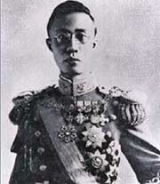

名称：
集数：
播出时间：
百家讲坛 末代皇帝溥仪
21
2010年11月13日
对于今天的中国人来说，皇帝是古老而又神秘的词汇，秦皇汉武、唐宗宋祖是遥远的仰望，康熙、乾隆也只剩画像上的猜想。但有一个皇帝，我们不仅能看清他的面容，还能听到他的声音，他就是清朝最后一位皇帝DD爱新觉罗・溥仪。溥仪出生于1906年，逝世于1967年，在一个花甲的轮回中，他拥有了非凡传奇的人生经历：登极、退位、傀儡；皇帝、战犯、公民，荣辱沉浮、几度起落，每一个他都很不寻常。在那个大动荡、大转折的时代，他和普通人一样，也曾焦虑、也曾彷徨，在尴尬中寻找前行的路，在期待中挽回失去的家。他是一个时代的缩影，他是历史的注脚。让我们跟随辽宁师范大学喻大华教授的脚步，拨开历史的迷雾，一同走近末代皇帝溥仪的内心世界。